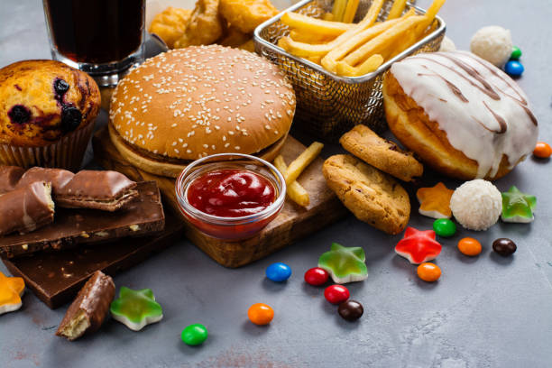

Tech
How to create the best UI with Figma
User Interface (UI) design plays a pivotal role in crafting digital experiences that are not only functional but also visually engaging.Wireframing and prototyping help in establishing the structure and flow of the design,while focusing on usability and accessibility ensures an inclusive experience for all users.Collaborative features in Figma facilitate feedback and iteration, leading to polished and refined designs.Testing with real users provides valuable insights,allowing designers to refine their designs further.By following these steps and harnessing the power of Figma,designers can create UI designs that not only meet user needs but also stand out in today's competitive digital landscape.

Tech
Unveiling the Digital Behemoth: Exploring the World of YouTube
In the realm of digital entertainment, YouTube stands as a titan, revolutionizing the way we consume and create video content. With its vast repository of videos spanning every conceivable topic, from educational tutorials to entertainment vlogs, YouTube has become an indispensable platform for both creators and viewers alike. Its user-friendly interface and algorithm-driven recommendations make it effortless to discover new content tailored to individual preferences. Moreover, YouTube's monetization options, such as the Partner Program and Super Chat, empower creators to turn their passion into a lucrative career.

Nature
Reconnecting with Nature: Finding Serenity in the Great Outdoors
In our increasingly urbanized and digital world, it's easy to lose touch with the natural world around us. Yet, spending time in nature offers a myriad of benefits for our physical, mental, and emotional well-being. Whether it's a leisurely stroll through a local park, a hike in the mountains, or a weekend camping trip, immersing ourselves in nature can be a transformative experience. Not only does it provide an opportunity to disconnect from the stresses of daily life, but it also allows us to reconnect with ourselves and the world around us. The sights, sounds, and scents of nature have a calming effect on the mind, reducing stress and promoting relaxation.
Nature
Nature's Symphony: Embracing the Beauty and Wonder of the Natural World
Nature, with its awe-inspiring landscapes and breathtaking beauty, holds a timeless allure that captivates our senses and stirs our souls. From the majestic mountains to the tranquil forests and serene seascapes, each corner of the natural world offers a symphony of sights, sounds, and sensations to behold.
By fostering a deep reverence for nature and embracing its beauty and wonder, we can cultivate a profound sense of connection and belonging that enriches our lives and strengthens our bonds with the world around us

Food
The Truth Behind Junk Foods
The consumption of junk foods has become a prevalent habit in modern society, driven by factors such as convenience, affordability, and aggressive marketing strategies. However, despite their widespread popularity, these foods pose significant health risks that cannot be ignored.
One of the primary concerns associated with junk foods is their detrimental impact on metabolic health.These high-glycemic foods can cause rapid spikes in blood sugar levels, leading to insulin spikes and subsequent crashesBy prioritizing whole, minimally processed foods rich in nutrients and fiber, individuals can support their metabolic health, reduce the risk of chronic diseases, and enhance overall well-being.

Tech
Unveiling Tomorrow: Exploring Future Advancements in AI
In the coming years, artificial intelligence (AI) stands at the brink of revolutionizing healthcare in ways previously unimaginable. The integration of AI technologies promises to usher in a new era of personalized medicine and proactive healthcare management.One of the most profound impacts of AI in healthcare lies in its ability to leverage vast amounts of patient data to derive actionable insights. Through sophisticated algorithms and machine learning techniques, AI systems can analyze complex datasets with unparalleled speed and accuracy, identifying subtle patterns and correlations that may elude human perception.

Food
Nourishing Body and Soul: The Power of Food Beyond Sustenance
Beyond its nutritional value, food possesses remarkable healing properties that can promote physical, mental, and emotional well-being. The practice of culinary medicine recognizes the therapeutic potential of food as medicine, harnessing the power of specific nutrients and dietary patterns to prevent and manage chronic diseases such as diabetes, heart disease, and obesity. Moreover, mindful eating practices, such as intuitive eating and conscious consumption, encourage us to cultivate a deeper awareness of our bodies' hunger and satiety cues, fostering a more balanced and harmonious relationship with food.
By embracing intuitive eating and conscious consumption, individuals can foster a deeper connection with their bodies, honoring hunger and satiety cues while savoring the sensory pleasures of food.

Tech
Unraveling the Magic of Machine Learning: Transforming Data into Insights
Machine learning, a subset of artificial intelligence, stands as a beacon of innovation in the realm of data science. It empowers computers to learn from data, identify patterns, and make decisions with minimal human intervention. At its core, machine learning is a journey of discovery, where vast amounts of data become the raw material for insights and predictions that can revolutionize industries, reshape societies, and unlock new frontiers of knowledge.
he beauty of machine learning lies in its ability to extract meaning from complexity. By leveraging sophisticated algorithms and computational power, machine learning models can uncover hidden patterns and relationships within data that may elude human observation.

Food
Delving into a Delicious and Nutritious Seafood
Shrimp, often celebrated for its succulent taste and versatility, holds a special place in the culinary world as a beloved seafood delicacy. Beyond its delectable flavor, shrimp offers a wealth of nutritional benefits, making it a valuable addition to any diet. Rich in protein and low in fat, shrimp provides a satisfying and wholesome option for those seeking to maintain a balanced and healthy lifestyle. Additionally, shrimp is a good source of essential vitamins and minerals, including selenium, vitamin B12, and iodine, which play vital roles in supporting overall health and well-being. Whether grilled, sautéed, or added to salads and stir-fries, shrimp lends itself to a wide range of culinary creations, adding depth and flavor to any dish. As we savor the taste and texture of this beloved seafood, let us also appreciate the nutritional bounty it brings to our tables, nourishing both body and soul with each delightful bite.